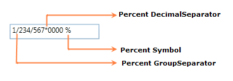

You can customize the Number Format either by using the Number Format property or the PercentGroupSeparator, PercentGroupSizes, PercentDecimalDigits, PercentDecimalSeparator, PercentNegativePattern, PercentPositivePattern, and PercentageSymbol properties.
|
XAML
<syncfusion:PercentTextBox x:Name="percentTextBox" Height="25" Width="150" PercentValue="1234567"> <syncfusion:PercentTextBox.NumberFormat> <numberformat:NumberFormatInfo PercentGroupSeparator="/" PercentDecimalDigits="4" PercentDecimalSeparator="*" PercentSymbol="%"/> </syncfusion:PercentTextBox.NumberFormat> </syncfusion:PercentTextBox> |
|
C#
PercentTextBox percentTextBox = new PercentTextBox(); percentTextBox.Width = 150; percentTextBox.Height = 25; percentTextBox.PercentValue = 1234567; percentTextBox.NumberFormat = new NumberFormatInfo() { PercentGroupSeparator = "/", PercentDecimalDigits = 4, PercentDecimalSeparator = "*", PercentSymbol = "%" }; |

Figure 781: PercentTextBox
|
XAML
<syncfusion:PercentTextBox x:Name="percentTextBox" Height="25" Width="150" PercentValue="1234567" PercentageSymbol="%" PercentDecimalDigits="4" PercentDecimalSeparator="*" PercentGroupSeparator="/"/> |
|
C#
PercentTextBox percentTextBox = new PercentTextBox(); percentTextBox.Width = 150; percentTextBox.Height = 25; percentTextBox.PercentValue = 1234567; percentTextBox.PercentageSymbol = "%"; percentTextBox.PercentDecimalDigits = 4; percentTextBox.PercentDecimalSeparator = "/"; percentTextBox.PercentGroupSeparator = "*"; |
Figure 782: PercentTextBox
Gets or sets the format pattern for the positive percent values. In the table displayed below “%” denotes the Percent symbol and n denotes the number.
|
Value |
Associated Pattern |
|
0 |
n % |
|
1 |
n% |
|
2 |
%n |
|
3 |
% n |
|
XAML
<syncfusion:PercentTextBox x:Name="percentTextBox" Height="25" Width="150" PercentValue="1234" PercentPositivePattern="3"/> |

Figure 783: PercentTextBox
Gets or sets the format pattern for the negative percent values. In the table displayed below “%” denotes the Percent symbol and n denotes the number.
|
Value |
Associated Pattern |
|
0 |
-n % |
|
1 |
-n% |
|
2 |
-%n |
|
3 |
%-n |
|
4 |
%n- |
|
5 |
n-% |
|
6 |
n%- |
|
7 |
-% n |
|
8 |
n %- |
|
9 |
% n- |
|
10 |
% -n |
|
11 |
n- % |
|
XAML
<syncfusion:PercentTextBox x:Name="percentTextBox" Height="25" Width="150" PercentValue="1234" PercentNegativePattern="7"/> |

Figure 784: PercentTextBox